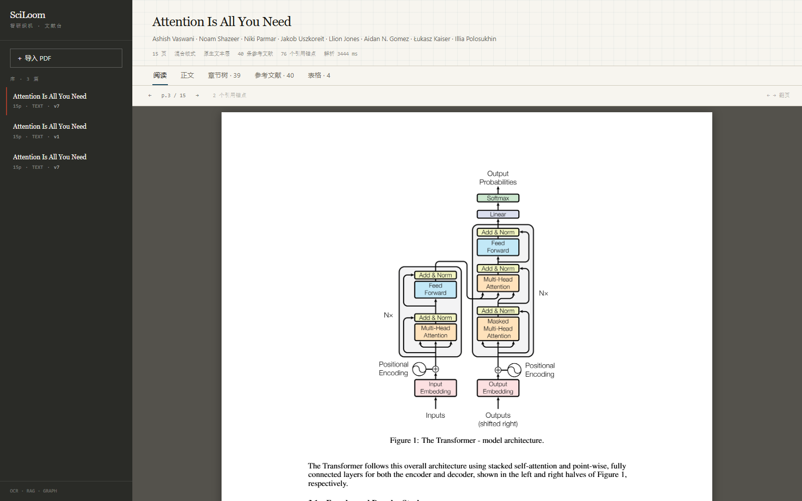
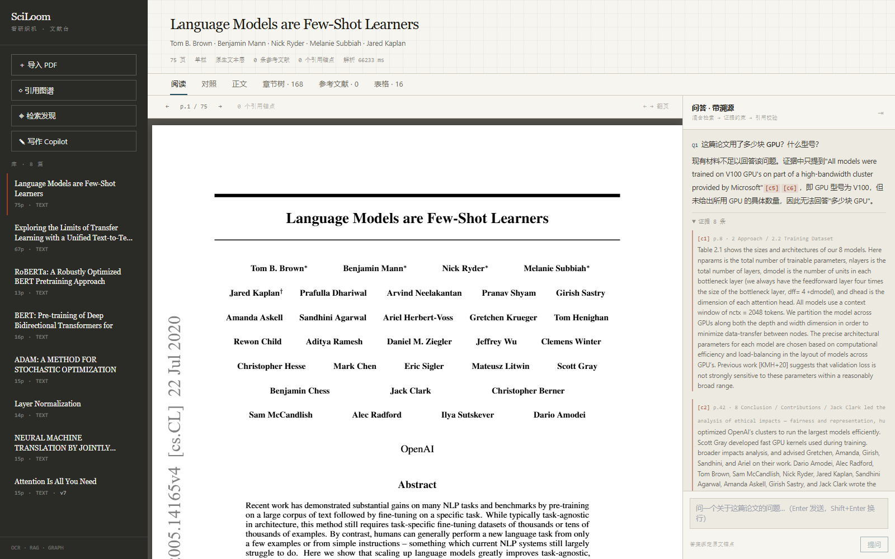
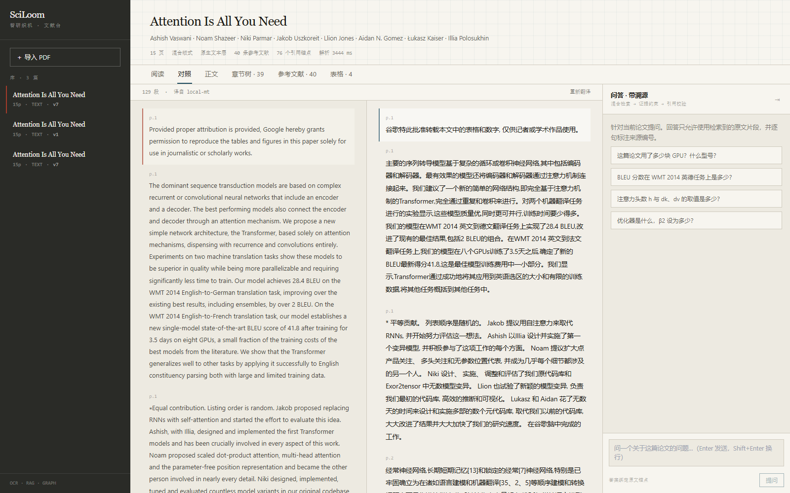
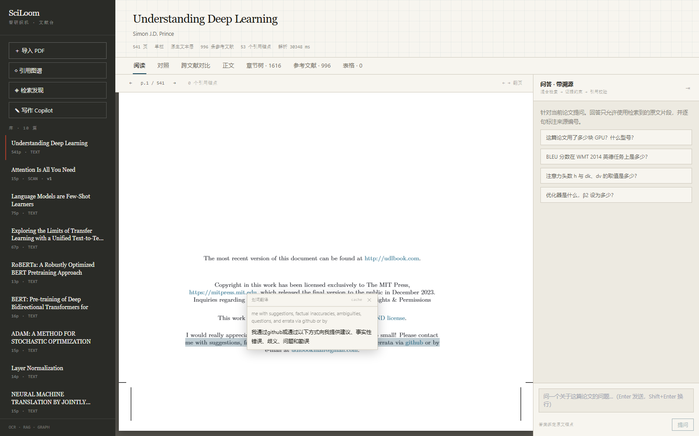
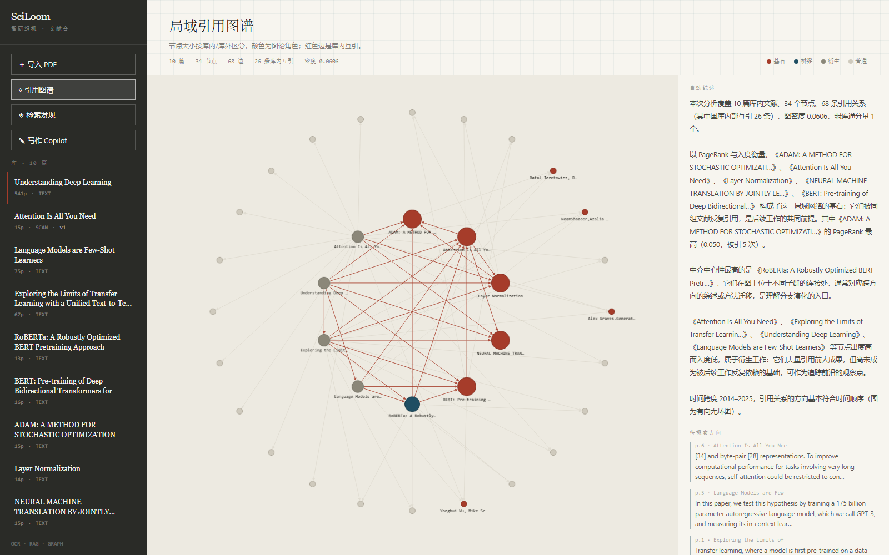
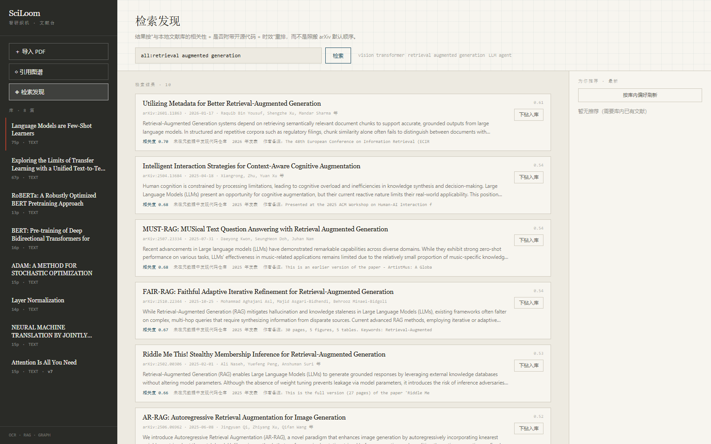
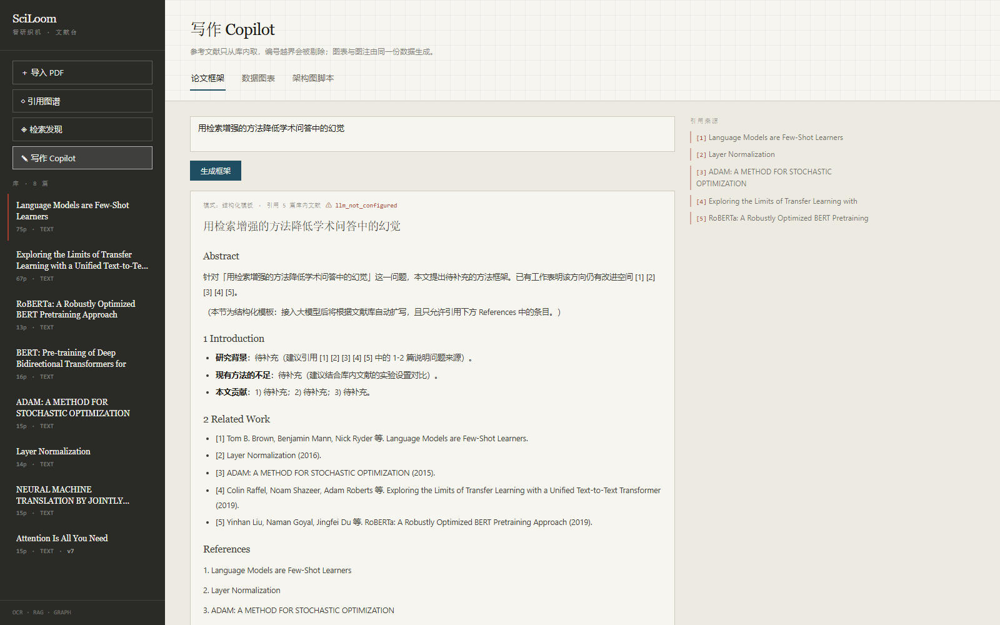
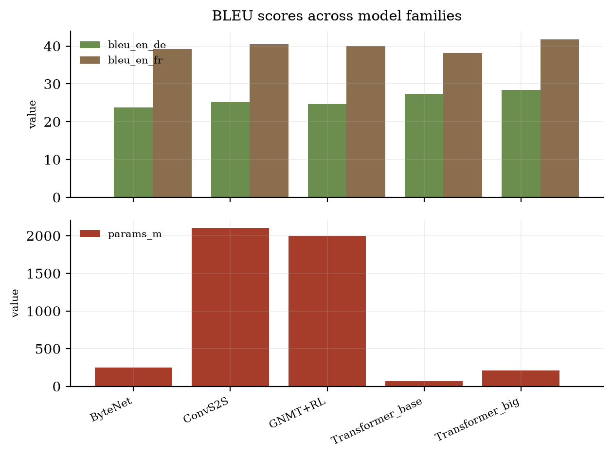
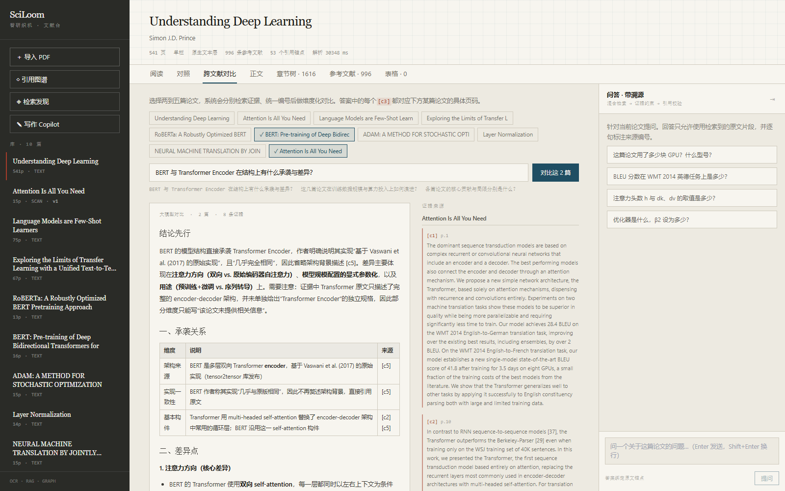

科研工作者每天面对的不是"没有信息"，而是"信息太多且不可信"。arXiv 单日更新数百篇，一篇论文动辄几十页，跨语言阅读又要额外付出成本；更麻烦的是，通用聊天机器人在学术场景里会流畅地编造超参数、硬件型号和参考文献——而科研恰恰是幻觉零容忍的领域。
SciLoom 的定位不是"给 PDF 加一个对话框"，而是把一篇论文从下载到写成综述的全过程织成一条可追溯的链路：解析 → 检索 → 问答溯源 → 对照阅读 → 图谱洞察 → 写作成图。产品的一条硬性原则贯穿始终：每一句结论都必须能回到原文的页码与段落；每一个"研究空白"都必须先被证明没有被后续论文填上。
| 层 | 技术选型 | 职责 |
|---|---|---|
| 前端 | Next.js 14（App Router）+ TypeScript + Tailwind | 文献台、PDF 阅读器、对照翻译、图谱、写作 Copilot |
| 后端 | FastAPI + Python 3.11 | 解析、检索、OCR、翻译、图谱、写作 |
| 模型 | DeepSeek-V3（对话）+ BGE-M3（向量）+ opus-mt（离线翻译）+ RapidOCR | 生成、召回、跨语言、扫描件识别 |
| 存储 | SQLite（元数据）+ 本地 JSON（解析结果）+ npz（向量） | 零运维，单机可复现 |
| 模块 | 核心能力 | 状态 |
|---|---|---|
| ① 文献管理与解析 | 批量上传、语义去重、标题树、表格、公式、参考文献、扫描件 OCR | 已完成 |
| ② 抗幻觉问答 | 混合检索、证据约束、引用白名单校验、拒答 | 已完成 |
| ③ 阅读与翻译 | PDF 渲染、锚点叠加、双向跳转、中英对照同步滚动 | 已完成 |
| ④ 检索与推荐 | arXiv 检索、相关性重排、代码可复现性加权、一键入库 | 已完成 |
| ⑤ 图谱与综述 | 引用网络、PageRank 角色、结构化综述、Future Work 抽取 | 已完成 |
| ⑥ 写作与可视化 | 无幻觉框架、CSV 学术图表与图注、TikZ/Mermaid 脚本 | 已完成 |
目标用户是正在做文献综述的研究生与高年级本科生。他们一周内要读完 20–50 篇论文，产出开题报告或综述初稿。真实痛点集中在三处：筛选（哪些值得读）、精读（细节在哪一页）、写作（引用不能编）。
| 赛题要求 | 我们的实现 | 可验证的验收标准 |
|---|---|---|
| 内容语义去重 | 段落级 8-gram shingle Jaccard + SimHash + 标题相似度 | 先传 v7 再传 v1，判定 same_work（0.905）并建议保留 v7 |
| 扫描件解析 | RapidOCR 逐页识别，坐标按页面/位图比例反算回 PDF 空间 | 无文本层 PDF 解析出标题、7 个章节、36 条参考文献 |
| 长文档鲁棒性 | 分块入库、按需索引、表格识别前置筛选 | 541 页教材 29.3 s 解析、峰值内存 24.3 MB |
| 抗幻觉溯源 | 证据约束提示词 + 引用编号白名单 + 无引用标记 | 证据不足时明确拒答；越界编号被剔除并告警 |
| 双向联动翻译 | 段落级对齐，按块索引同步滚动 | 拖动左栏 1400 px，右栏自动到同一段 |
| 图谱基石挖掘 | NetworkX PageRank + 中介中心性，分位数划分角色 | Adam / Attention / LayerNorm 被识别为基石，RoBERTa 识别为衍生 |
| 无幻觉写作 | 参考文献只从库内按语义相似度选取，越界引用剔除 | 生成的框架中每个 [n] 都对应库内真实文献 |
┌──────────────────────────────────────────────────────────────┐
│ Web (Next.js 14 · TypeScript) │
│ 文献台 │ PDF 阅读器 │ 对照翻译 │ 引用图谱 │ 检索发现 │ 写作 │
└───────────────┬──────────────────────────────────────────────┘
│ REST + SSE
┌───────────────▼──────────────────────────────────────────────┐
│ API (FastAPI) │
│ ┌────────────────────────────────────────────────────────┐ │
│ │ 路由层 documents / qa / translation / graph / arxiv / │ │
│ │ writing │ │
│ └────────────────────────────────────────────────────────┘ │
│ ┌────────────────────────────────────────────────────────┐ │
│ │ 服务层 parser · ocr · chunking · retrieval · qa · │ │
│ │ dedupe · version_diff · graph · survey · │ │
│ │ translate · arxiv_client · recommend · │ │
│ │ viz · writing · ingest · llm │ │
│ └────────────────────────────────────────────────────────┘ │
└───────────────┬──────────────────────────────────────────────┘
│
SQLite + JSON + npz 向量 + 本地文件（原始 PDF / 译文 / 指纹）
图 3-1 系统分层：路由薄、服务厚，所有能力以服务函数暴露，便于单独测试
.
├── apps/
│ ├── api/ # FastAPI：app/{core,models,routers,services}
│ └── web/ # Next.js：app/ components/ lib/
├── pdf/ # 官方测试集（不入库）
├── scripts/ # 取数、评测、探针、启停
├── deploy/ # nginx 配置
├── docs/ # 本文档、进度、部署手册
├── docker-compose.yml
└── .env.example
| 决策 | 选择的理由 | 代价 |
|---|---|---|
| 嵌入式向量库（npz）而非 Milvus/Qdrant | 单人赛、单机演示，运维成本必须为零 | 不支持并发写入、规模限于单机 |
| SQLite + JSON 落盘 | 解析结果是嵌套结构，JSON 便于前端整块读取与调试 | 大文档解析结果体积较大（541 页约 20 MB） |
| 解析与索引分离，索引惰性构建 | 上传接口不能被 100 秒的建索引拖住 | 首次提问要等索引就绪（已有状态帧提示） |
| 模型全部可降级 | 评审环境不一定有 Key 或外网 | 降级链路需要额外维护 |
PyMuPDF 返回的 block 在学术 PDF 上并不可靠：它会把手写模板里左右两栏的文字合并成一个横跨整页的 bbox（实测 x[108, 504]）。如果直接按 block 处理，双栏还原和引用锚点坐标会同时失真。
因此解析器改为行级抽取 → 横向分带 → 栏内合并：先把每行的 bbox 取出来，按"是否跨越页宽中线"判定所在栏，再以"通栏行"为分隔把页面切成若干横带，带内先左栏后右栏，最后按行距合并成段落块。
一个反直觉的事实：《Attention Is All You Need》正文是单栏（NeurIPS 模板），只有参考文献页是双栏。如果按"块中心是否在页宽中线左右"聚类，单栏论文会被误判成双栏。我们的判据是：
two_column = (左侧窄行 ≥ 6) and (右侧窄行 ≥ 6) and (跨中线行 ≤ 25%)
单栏页面里绝大多数行都横跨中线，这一条直接否决，误判率显著下降。
LaTeX 生成的 PDF 常把空格单独输出成一个 span。早期实现为了去掉空 span，写成"只保留有文本的 span 再拼接"，结果整句粘成：
TheencoderiscomposedofastackofN=6identicallayers
这个缺陷不抛异常、不报错，但会同时污染关键词检索、向量化与喂给模型的上下文。修正前后检索评测（6 个问题，命中 @3）：
| 策略 | 修正前 | 修正后 |
|---|---|---|
| BM25 | 2/5 | 4/5 |
| 稠密（BGE-M3） | 3/5 | 6/6 |
数字式 [12] Author. Title. 与作者-年份式（ACL/NAACL 常见，完全没有编号）：
Alan Akbik, Duncan Blythe, and Roland Vollgraf. 2018. Contextual string embeddings…
只认数字式会让 BERT/RoBERTa/T5 的参考文献数全为 0，引用图谱随之只剩几条边。补上作者-年份式判定（含四位年份 + 首字母大写 + 长度合理）后：
| 论文 | 修正前 | 修正后 |
|---|---|---|
| BERT | 0 | 53 |
| RoBERTa | 0 | 49 |
| T5 | 0 | 128 |
| 库内互引边 | 4 | 16 |
块级 bbox 会让阅读器把一大段都高亮。解析后我们对每条 [n] 调用 page.search_for() 在块内二次检索，得到字符级矩形；锚点数量超过 600 时自动跳过（避免长文档拖慢解析）。
RapidOCR 逐页识别后，用 页面尺寸 / 位图尺寸 把像素坐标反算回 PDF 用户坐标——上层因此不需要区分"原生文档"与"扫出来的文档"。OCR 页没有字号与字重，标题判定改为只认"编号"或"命名章节"两个强信号，否则行高抖动会把整页判成标题（实测曾出现 173 个假标题，修正后 27 个）。
541 页教材最初要 159 秒，瓶颈是 find_tables() 在每页都执行，而教材里大量矢量插图被当成表格候选。改成"页面出现 Table N 字样才识别"后：
| 文档 | 页数 | 耗时 | 内存峰值 |
|---|---|---|---|
| 1706.03762v7 | 15 | 8.0 s | 29.5 MB |
| 1706.03762v1（扫描件 OCR） | 15 | 约 115 s | — |
| Understanding Deep Learning | 541 | 29.3 s | 24.3 MB |
按 block 聚合，块内不切断公式与表格，每块继承章节路径（如 5 Training / 5.2 Hardware and Schedule）。这样既能按语义检索，也能回答"第 3.2 节讲了什么"这类结构性问题。15 页论文切出 106 块。
教科书答案是"BM25 + 向量加权融合"。我们照做之后评测只有 4/6，换成纯稠密反而 6/6。原因是跨语言：用户用中文提问、论文是英文时，BM25 的分词几乎全部落空，它给出的排序是噪声，会把向量已经命中的正确段落挤出前列。
最终方案是稠密召回 + 短名单内稀疏重排：向量取 top-50 作为候选，BM25 只在这 50 个里重排，权重按"查询词在语料中的覆盖率"自适应（覆盖率低于 30% 时权重归零）。既保住了型号、数值这类精确串，又不会让噪声污染召回。
| 策略 | 命中 @3 | top-1 |
|---|---|---|
| BM25 only | 4/6 | 2/6 |
| 稠密 only（BGE-M3） | 6/6 | 6/6 |
| RRF 平行融合 | 4/6 | 3/6 |
| 稠密召回 + 短名单重排 | 6/6 | 5/6 |
表 4-1 检索策略对比（6 个取自论文原文的问题，含 1 个中文提问）
闸门一 · 证据约束：系统提示词规定"只依据 <证据> 作答、逐句标注 [cN]、证据不足时明确说不知道、不得换算或四舍五入数值"。
闸门二 · 引用白名单：生成后提取所有 [cN]，凡不在本次证据集合内的编号一律剔除并写入 warnings。这条防线曾经形同虚设——校验正则写的是 c[0-9a-zA-Z]{4,16}，而证据编号是 c1 这种两位短号，永远匹配不上，于是既拦不住越界引用，又会把每轮回答误判成"未绑定证据"。
闸门三 · 无引用即标记：模型没给出任何引用时，回答被标记 ungrounded，前端显式提示，而不是把它当成可信答案。
判定不依赖文件名，也不只看哈希（v1/v7 改了几十处，哈希完全不同）。三个信号加权：
结论分四级：identical / same_work / related / different，并据此给出"保留 / 替换 / 并存"的建议。版本差异则按一级章节对齐，输出新增、删除、修改的节与字符数变化。
翻译后端按可用性自动选择：LLM（有 Key）→ 本地 opus-mt-en-zh（离线）→ 直通并标注未翻译。本地 MT 有明显系统性误译（"Transformer"→"变异器"、"attention"→"关注"），因此加了一层术语表后处理，129 段中修正 26 段；但这仍明显弱于大模型，文档中如实说明。
只翻译真正的正文段落（跳过作者行、邮箱串），175 段噪声降到 129 段，耗时从 434 秒降到 168 秒。对照阅读按块索引同步而不是按滚动比例：两侧行高差异大，比例同步会越读越偏。
除整篇对照外，阅读器还支持划词翻译：用 PDF.js 的 TextLayer 让 PDF 像网页一样可选中文字，鼠标松开即把选区送去翻译，1–2 秒返回气泡。同一句重复划选直接命中进程内缓存。切换页面时会重建文本层，避免上一页的选中区残留。
边方向是"引用者 → 被引者"，因此入度与 PageRank 才代表"基石程度"。角色划分用分位数而非绝对阈值（不同规模的库，入度 2 与入度 20 意义完全不同）：
综述文本由图谱统计生成：基石是谁、被引几次、中介节点在哪、时间跨度、是否 DAG。不是让模型"编一段综述"，而是把结构翻译成人话。
框架生成时，参考文献只能从库内按语义相似度选取，编号 1..N 与库内文档一一绑定；模型若引用 [7] 而只提供了 5 条，该编号会被剔除并告警。没有模型时返回结构化模板并把 mode 标为 template——宁可让评审看到"没编"，也不假装生成。
图表类型由数据形状决定，量级相差 20 倍以上时自动拆成多个子图（否则小量级序列会被压成一条贴地线——图没错，但它在骗人）。图注不是套话：峰值、极值位置、趋势斜率都从同一份数据算出，写进图注的数字与图上画的是同一份数据。

图 5-3 PDF 渲染与引用锚点叠加：红色方块即解析阶段产出的字符级 bbox
阅读器用 PDF.js 把页面画到 Canvas，再把解析出的 bbox 乘以同一个 scale 叠成绝对定位的方块。因为解析与渲染共用 PDF 用户坐标系，锚点不需要二次 OCR 或猜测。参考文献列表点击 [12] 即跳到正文对应位置并高亮；章节树、正文段落、问答证据同样可跳转。

图 5-4 流式回答、可点击引用芯片与证据列表；证据不足时明确拒答

图 5-5 左英文右中文，按块索引同步；点击任一侧跳回 PDF 坐标

图 5-6 划词翻译：选中一句，气泡即时给出译文，引用编号与专有名词原样保留

图 5-7 33 节点 / 52 边；红色为基石论文，右侧为图谱统计生成的综述与待探索方向

图 5-8 按"库内相关性 + 开源代码 + 时效"重排，支持一键下钻入库

图 5-9 框架生成：右侧列出被引用的库内文献，编号与正文一一对应

图 5-10 CSV → 学术图表：BLEU 与参数量量级相差 20 倍，自动拆成上下两个子图

图 5-11 BERT 与原始 Transformer 的承袭与差异：按维度组织，引用可逐条跳回原文
对比模式允许勾选 2–5 篇论文：系统分别检索各自证据、统一编号后交给模型，要求按"架构来源 / 实现一致性 / 基本构件 / 注意力方向"等维度组织答案，而不是逐篇复述。右侧按文档分组列出证据，点击任一条可跳到对应论文的对应页——这使"跨文献推理"同样具备可追溯性。
实践中发现一个细节：模型倾向于用表格呈现对比，而最初的 Markdown 渲染器只支持标题与列表，表格会退化成一行行竖线。补上表格解析后，对比结果才真正可读。
| 用例 | 做法 | 结果 |
|---|---|---|
| 版本去重（v7 → v1） | 先入 v7，再上传 v1，比较正文指纹 | same_work，相似度 0.905，建议保留 v7 |
| 完全重复（v7 → v7） | 同一文件二次上传 | identical，相似度 1.000 |
| 扫描件（v1_img） | 15 页纯图片 PDF 走 OCR | 识别出标题、7 个章节、36 条参考文献 |
| 长文档（541 页） | 整本教材解析 + 索引 | 29.3 s，峰值 24.3 MB |
| CSV → 图表 | 5 行 4 列 BLEU 数据 | 分组柱状图 + 数字级图注 |
| 架构图脚本 | 6 段流水线 | Mermaid / TikZ / Graphviz 三份可编译脚本 |
正文整体相似度 65.2%；新增 1 节；修改 8 节，改动最大的是 7 Conclusion(+45/-35)、6 Results(+27/-25)、3 Model Architecture(+28/-23)； 正文 +2644 字符；参考文献 36 → 40 条，表格 4 → 4 个。
6 个问题全部取自论文原文，答案特征串人工核对（如"8 NVIDIA P100""28.4""h=8""0.98""N=6"），命中定义是"特征串出现在 top-3 片段中"。脚本 scripts/eval_retrieval.py 可离线复现，不依赖运行中的服务。
同一份 PDF 两次解析，页数、标题数、参考文献数、锚点数完全一致；指纹（SimHash）相同。这保证了"输出成果可验证"的要求。
health : {"status": "ok"}
upload : {"title": "Attention Is All You Need", "authors": [8 人全部命中]}
parsed : page_count=15 block_count=259 heading_count=39
reference_count=40 cite_anchor_count=76
sections: ['1 Introduction', '2 Background', … '7 Conclusion']
| 创新点 | 与常规做法的差异 |
|---|---|
| 行级重建 + 跨中线否决的双栏判定 | 常规做法按 block 聚类或按 x 坐标分栏，在"block 跨栏"与"单栏论文"两种情况下都会失效；我们用行的跨中线比例否决，实测能正确区分 NeurIPS 单栏正文与双栏参考文献页 |
| 稠密召回 + 短名单稀疏重排 | 常规混合检索把 BM25 与向量平行融合；我们通过评测证明这在跨语言场景下会显著劣化，改为"稀疏只在稠密候选内重排" |
| 引用白名单校验 | 多数系统的"溯源"只到提示词层面；我们做了生成后的硬校验，越界编号直接剔除 |
| 分位数角色划分的图谱挖掘 | 用绝对入度阈值无法跨库迁移；分位数让"基石/桥梁/衍生"在 10 篇与 100 篇的库上都有意义 |
| 量级感知的自动图表拆分 | 常规做法是画在同一根轴上或让用户手动选；我们检测量级差并自动拆子图，同时在图注里说明原因 |
三个容器：api（解析/检索/OCR/翻译/图谱）、web（Next standalone）、nginx（反向代理）。模型与数据挂卷，容器重建不丢；SSE 在 nginx 层关闭缓冲，否则 token 会攒到最后一次性吐出。
docker compose build # 首次 15-25 分钟 docker compose up -d python scripts/seed_demo.py http://<公网IP> # 灌入 9 篇演示数据
| 变量 | 说明 |
|---|---|
| LLM_API_KEY | DeepSeek 密钥；为空时自动降级为抽取式 |
| EMBEDDING_MODEL | 默认 BAAI/bge-m3，本地加载 |
| HF_ENDPOINT / HF_OFFLINE | 国内走镜像；模型缓存后可置 offline 避免启动探测超时 |
| CHUNK_SIZE / CHUNK_OVERLAP | 分块粒度，默认 800 / 120 |
| TRANSLATION_BACKEND | auto / llm / local |
| 局限 | 现状 | 下一步 |
|---|---|---|
| OCR 速度 | 约 7 s/页（CPU），541 页扫描书需一小时 | 后台队列 + 断点续跑 + GPU 推理 |
| 索引构建 | CPU 上 100 块约 12 s，长文档更久 | 批量编码 + 增量索引 |
| 表格结构 | 依赖正文出现 "Table N"，教材中 0 命中 | 补图形检测兜底、合并跨页表格 |
| 作者机构 | 扫描件上作者为空 | OCR 后处理 + 版面聚类 |
| 公式 | 仅按字体启发式识别，未还原 LaTeX | 接入公式识别模型 |
| 多用户 | 单用户单库 | 账号体系 + 库隔离 + 推荐算法个性化 |
后续演进方向：把 Agent 的规划能力显式化（任务分解、工具选择、失败重试），把"一次问答"扩展为"多次检索—验证—修订"的闭环；同时接入更多数据源（PubMed、Semantic Scholar）与更多版式（Springer、Nature）。
| 接口 | 用途 |
|---|---|
| POST /api/documents/upload | 上传 PDF，解析并返回去重判定 |
| GET /api/documents/{id}/parsed | 取结构化解析结果 |
| GET /api/documents/{id}/file | 原始 PDF 字节流 |
| GET /api/documents/{id}/duplicates | 重复列表 |
| GET /api/documents/{a}/diff/{b} | 版本差异 |
| GET /api/qa/stream | SSE 流式问答（证据 + token） |
| POST /api/documents/{id}/translate | 生成段落级译文 |
| GET /api/graph / /api/graph/survey | 引用图谱与自动综述 |
| GET /api/arxiv/search | arXiv 检索 + 相关性重排 |
| POST /api/arxiv/ingest | 按 ID 下钻入库 |
| POST /api/writing/outline | 论文框架（库内引用） |
| POST /api/viz/chart | CSV → 图表 + 图注 |
| POST /api/writing/diagram | TikZ / Mermaid / Graphviz 脚本 |
apps/api/app/
├── core/ config.py db.py
├── models/ schema.py
├── routers/ documents qa translation graph arxiv writing
└── services/ parser ocr chunking retrieval qa dedupe version_diff
graph survey translate arxiv_client recommend viz
writing ingest llm
.env（示例见 .env.example）
LLM_BASE_URL=https://api.deepseek.com/v1
LLM_API_KEY=sk-***
LLM_MODEL=deepseek-chat
EMBEDDING_MODEL=BAAI/bge-m3
HF_ENDPOINT=https://hf-mirror.com
CHUNK_SIZE=800 CHUNK_OVERLAP=120
TRANSLATION_BACKEND=auto